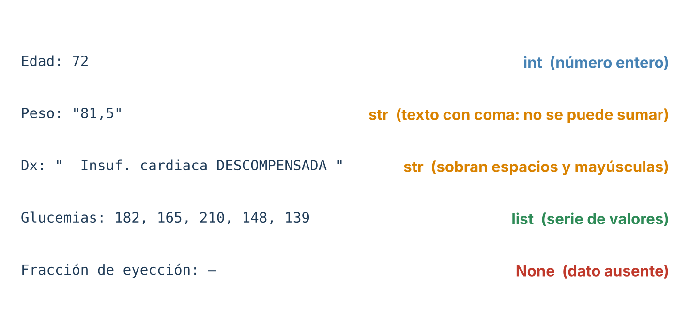
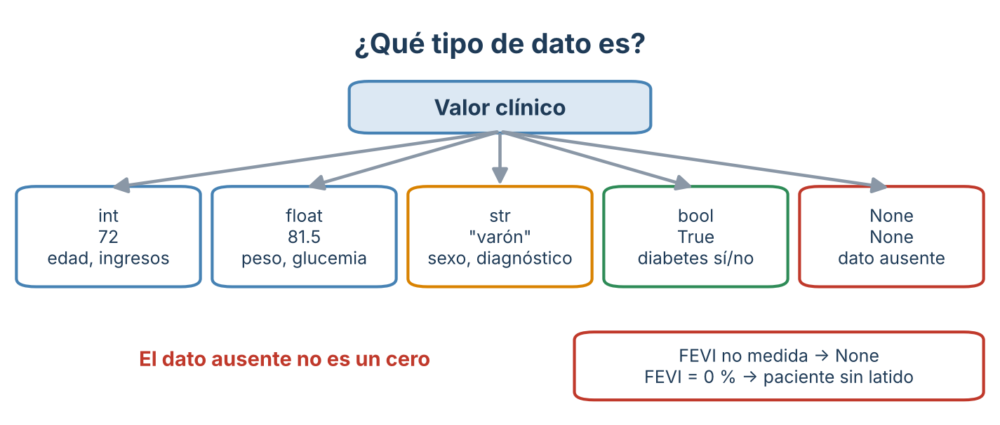
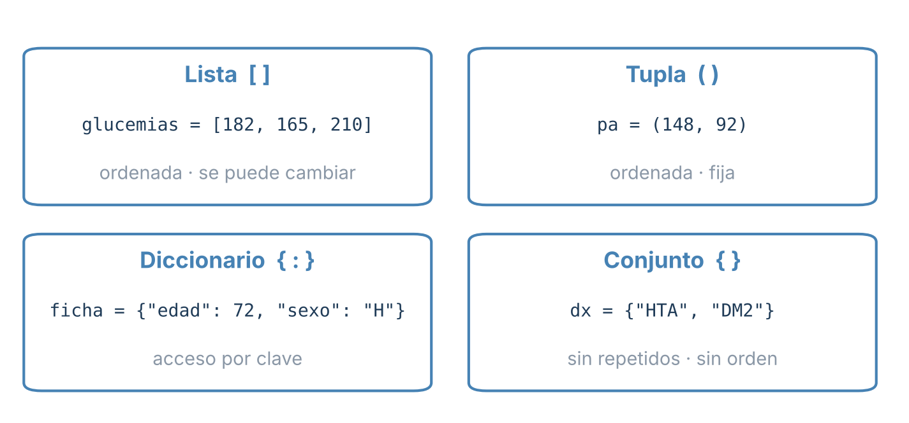
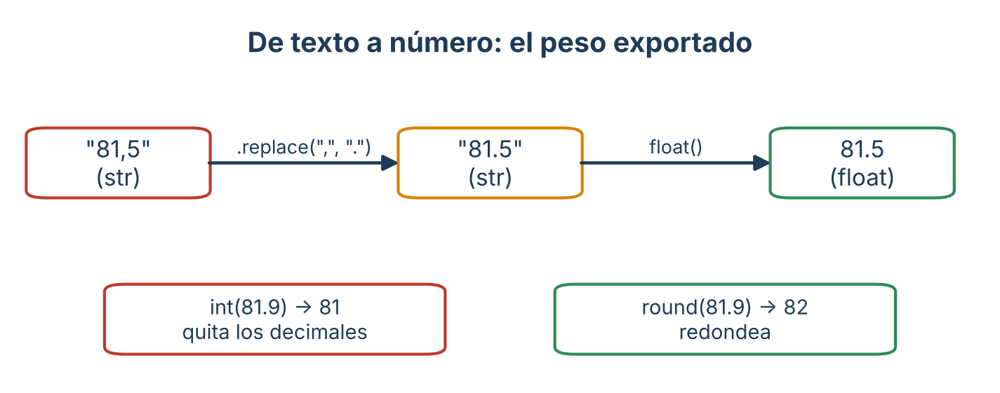
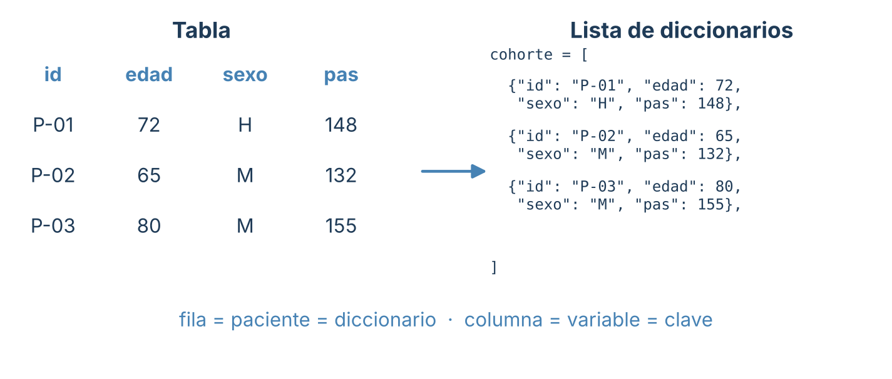

Bioestadística (1964) · Grado en Medicina · Curso 2027-2028
Tema 20Representación de datos clínicos en Python: tipos numéricos, cadenas de texto y estructuras de datos
Módulo 1. Descubriendo Python
Fernando Borrás Rocher · Universidad Miguel Hernández de Elche · CC BY 4.0
Objetivos de aprendizaje
Al terminar esta sesión serás capaz de:
- Distinguir los tipos de datos básicos de Python: enteros, decimales, texto, lógicos y valor nulo.
- Relacionar cada tipo de dato de Python con el tipo de variable clínica que representa.
- Convertir datos de un tipo a otro, en particular texto que contiene números.
- Manipular cadenas de texto clínico: limpiar, normalizar y extraer partes.
- Guardar series de mediciones en listas y la ficha de un paciente en un diccionario.
- Reconocer los errores más frecuentes al mezclar tipos de datos.
Cómo usar esta presentación
Usa el selector de arriba para dar el tema en una sesión completa o en dos sesiones intercaladas.
🎓 Sesión de clase magistral
- 1. Caso clínico de partida 5 min
- 2. Conceptos clave 10 min
- 5. Autoevaluación 5 min
Explica los conceptos, haz la pausa activa y cierra con las ideas clave.
💻 Sesión de Colab
- 3. Demostración: tipos y estructuras en Python 20 min
- 4. Práctica en la app Bioestadística 10 min
- 5. Autoevaluación 5 min
Cada estudiante abre su copia del cuaderno, predice el resultado y después ejecuta la celda.
Teclas: ← → para pasar · N notas del profesor · M cambiar de modo · F pantalla completa · Esc índice.
1. Caso clínico de partida
Cada dato tiene su tipo

- Lo que para nosotros es «el peso», para Python puede ser un número o un texto.
- Antes de calcular hay que dar a cada dato su tipo: número, texto, lista… o ausente.
2. Conceptos clave
2.1 Tipos de datos básicos

| Tipo en Python | Nombre | Ejemplo | Variable clínica que suele representar |
|---|---|---|---|
int |
Entero | 72 |
Cuantitativa discreta: edad en años, número de ingresos |
float |
Decimal (coma flotante) | 81.5 |
Cuantitativa continua: peso, glucemia, creatinina |
str |
Cadena de texto | "varón" |
Cualitativa: sexo, diagnóstico, servicio |
bool |
Lógico | True, False |
Dicotómica: diabetes sí/no, éxitus sí/no |
NoneType |
Valor nulo | None |
Dato ausente: no medido o no registrado |
La función type() indica el tipo de cualquier valor.
El dato ausente no es un cero. Una fracción de eyección no registrada no es una fracción de eyección del 0 %. Confundirlos es uno de los errores más graves al analizar datos clínicos; por eso Python tiene un valor específico, None.
2. Conceptos clave
2.2 Estructuras de datos
Cuatro formas de agrupar datos

- Lista: serie ordenada que cambia (glucemias). Tupla: valores fijos que van juntos (PAS/PAD).
- Diccionario: ficha con campos (edad, sexo…). Conjunto: valores únicos (diagnósticos).
Pausa activa
Piensa 30 segundos, comenta con quien tienes al lado y vota.
¿Qué tipo de dato de Python es el más adecuado para registrar si un paciente es fumador?
En la sesión de Colab
Lo que acabas de ver se comprueba con datos en el cuaderno del Tema 20.
- Abre el cuaderno y guarda tu copia: Archivo → Guardar una copia en Drive.
- Ejecuta la celda de configuración.
- Ve a la demostración y predice cada resultado antes de ejecutar.
3. Demostración: tipos y estructuras en Python
3.1 Números y tipos
▶ En tu cuaderno: 3.1 Números y tipos. Antes de ejecutar, escribe qué esperas obtener.
edad_anios = 72
glucemia_mg_dl = 182.0
diabetes = True
fraccion_eyeccion = None
print(type(edad_anios), type(glucemia_mg_dl), type(diabetes), type(fraccion_eyeccion))Operaciones aritméticas básicas: +, -, *, / (división con decimales), // (división entera), % (resto) y ** (potencia).
dias_ingreso = 17
print("Semanas completas:", dias_ingreso // 7)
print("Días sobrantes:", dias_ingreso % 7)
print("Estancia en semanas:", round(dias_ingreso / 7, 1))3. Demostración: tipos y estructuras en Python
3.2 Convertir texto en números
▶ En tu cuaderno: 3.2 Convertir texto en números. Antes de ejecutar, escribe qué esperas obtener.

Los datos exportados llegan a menudo como texto. El peso "81,5" no sirve para calcular hasta convertirlo. Primero cambia la coma por un punto; después conviértelo en float.
peso_texto = "81,5"
peso_kg = float(peso_texto.replace(",", "."))
print(peso_kg, type(peso_kg))Las funciones int(), float() y str() convierten entre tipos. int() trunca (quita los decimales); para redondear se usa round().
print(int(81.9), round(81.9))
print("Peso: " + str(peso_kg) + " kg")3. Demostración: tipos y estructuras en Python
3.3 Cadenas de texto clínico
▶ En tu cuaderno: 3.3 Cadenas de texto clínico. Antes de ejecutar, escribe qué esperas obtener.
Las cadenas tienen métodos, funciones que se aplican con un punto detrás del texto. Los más útiles para limpiar texto clínico:
| Método | Qué hace |
|---|---|
.strip() |
Quita los espacios del principio y del final |
.lower() / .upper() |
Pasa a minúsculas / mayúsculas |
.capitalize() |
Primera letra en mayúscula y el resto en minúscula |
.replace(a, b) |
Sustituye a por b |
.split(separador) |
Divide el texto en una lista |
.startswith(x) |
Comprueba si empieza por x |
diagnostico = " Insuficiencia cardiaca DESCOMPENSADA "
diagnostico_limpio = diagnostico.strip().capitalize()
print(f"[{diagnostico}]")
print(f"[{diagnostico_limpio}]")Normalizar el texto es imprescindible para contar casos: para Python, "Insuficiencia cardiaca" e "insuficiencia cardiaca " son textos distintos.
print("Insuficiencia cardiaca" == "insuficiencia cardiaca ")
print("Insuficiencia cardiaca".lower() == "insuficiencia cardiaca ".strip().lower())Los caracteres de una cadena también se numeran desde 0, y se pueden extraer porciones con [inicio:fin] (el final no se incluye).
codigo = "P-0457"
print("Prefijo:", codigo[0])
print("Número:", codigo[2:])
print("Longitud:", len(codigo))linea = "Paciente: P-0457 | Edad: 72 | Sexo: varón | Diabetes: sí"
campos = linea.split(" | ")
print(campos)
print("Edad como texto:", campos[1].split(": ")[1])3. Demostración: tipos y estructuras en Python
3.4 Listas: series de mediciones
▶ En tu cuaderno: 3.4 Listas: series de mediciones. Antes de ejecutar, escribe qué esperas obtener.
glucemias_mg_dl = [182, 165, 210, 148, 139]
print("Primera:", glucemias_mg_dl[0])
print("Última:", glucemias_mg_dl[-1])
print("Número de mediciones:", len(glucemias_mg_dl))
print("Máxima:", max(glucemias_mg_dl), "· Mínima:", min(glucemias_mg_dl))
print(f"Media: {sum(glucemias_mg_dl) / len(glucemias_mg_dl):.1f} mg/dL")Las listas se pueden ampliar con .append(), ordenar con sorted() y recortar con porciones.
glucemias_mg_dl.append(126) # nueva glucemia del día siguiente
print("Serie actualizada:", glucemias_mg_dl)
print("Ordenada:", sorted(glucemias_mg_dl))
print("Primeras tres:", glucemias_mg_dl[:3])3. Demostración: tipos y estructuras en Python
3.5 Tuplas: valores que van juntos
▶ En tu cuaderno: 3.5 Tuplas: valores que van juntos. Antes de ejecutar, escribe qué esperas obtener.
presion_arterial = (148, 92) # (sistólica, diastólica)
pas, pad = presion_arterial # desempaquetado
print(f"PAS {pas} mmHg · PAD {pad} mmHg")Una tupla no se puede modificar. Es útil para datos que no deben cambiar por error, como una medición ya registrada.
3. Demostración: tipos y estructuras en Python
3.6 Diccionarios: la ficha del paciente
▶ En tu cuaderno: 3.6 Diccionarios: la ficha del paciente. Antes de ejecutar, escribe qué esperas obtener.
paciente = {
"codigo": "P-0457",
"edad": 72,
"sexo": "varón",
"diabetes": True,
"peso_kg": 81.5,
"glucemias_mg_dl": [182, 165, 210, 148, 139],
"fraccion_eyeccion": None,
}
print("Edad:", paciente["edad"])
print("Glucemia máxima:", max(paciente["glucemias_mg_dl"]))
print("¿Tiene registrada la fracción de eyección?", paciente["fraccion_eyeccion"] is not None)Se añaden o modifican datos asignando un valor a una clave. El método .get() devuelve un valor por defecto si la clave no existe, en lugar de dar error.
paciente["fraccion_eyeccion"] = 35 # el ecocardiograma ya está informado
paciente["servicio"] = "Medicina Interna"
print(paciente["fraccion_eyeccion"])
print(paciente.get("alergias", "sin registrar"))
print(list(paciente.keys()))3. Demostración: tipos y estructuras en Python
3.7 Una cohorte: lista de diccionarios
Una cohorte es una lista de fichas

- Cada paciente es un diccionario; la cohorte, una lista de diccionarios.
- Es exactamente la estructura de una tabla: filas = pacientes, columnas = variables (Tema 100).
Ampliación
Ampliación: conjuntos para valores únicos
diagnosticos_servicio = ["HTA", "DM2", "HTA", "EPOC", "DM2", "HTA"]
distintos = set(diagnosticos_servicio)
print("Diagnósticos distintos:", distintos)
print("Número de diagnósticos distintos:", len(distintos))Ampliación
Ampliación: errores frecuentes
Sumar texto y números. "Peso: " + 81.5 produce TypeError. Hay que convertir el número con str() o, mejor, usar una cadena formateada (f-string).
peso_kg = 81.5
print(f"Peso: {peso_kg} kg")Convertir texto con coma. float("81,5") produce ValueError: primero hay que reemplazar la coma por un punto.
Salirse de la lista. En una lista de 5 elementos, el índice [5] no existe (los válidos van de 0 a 4) y produce IndexError.
Pedir una clave inexistente. paciente["alergias"] produce KeyError si la clave no existe; paciente.get("alergias") devuelve None.
Tratar el dato ausente como cero. Sustituir un None por 0 antes de calcular una media la sesga hacia abajo. En el Tema 100 veremos cómo tratar correctamente los valores perdidos.
Quita el # de cada línea, una a una, para ver los mensajes de error:
# print("Peso: " + 81.5)
# float("81,5")
# [182, 165, 210, 148, 139][5]
# paciente["alergias"]4. Práctica en la app Bioestadística
Abre la unidad 20 de la app Bioestadística y completa sus misiones:
- Misión básica (sin asistente): asignar el tipo de dato de Python adecuado a cada campo de una historia clínica sintética.
- Misión clínica (con pistas): limpiar un texto exportado de la historia clínica y construir el diccionario del paciente.
- Misión reto (con asistente): calcular la media de una serie de constantes con valores ausentes, sin tratarlos como ceros. Después, verificar el código que proponga el asistente.
Al terminar, exporta el informe de la unidad.
5. Autoevaluación
Responde sin asistente y sin ejecutar código.
5. Autoevaluación
Elige una opción: verás la explicación.
¿Qué tipo de dato de Python es el más adecuado para registrar si un paciente es fumador?
La lista glucemias = [182, 165, 210, 148, 139]. ¿Qué devuelve glucemias[1]?
¿Cuál es la forma correcta de convertir el texto "81,5" en el número 81.5?
La fracción de eyección de un paciente no se ha medido. ¿Cómo debe registrarse?
paciente = {"edad": 72, "sexo": "varón"}. ¿Qué devuelve paciente.get("alergias")?
Ideas clave
- Cada dato clínico se representa con un tipo:
int,float,str,booloNone. - El dato ausente se registra como
None, nunca como cero. - El texto exportado se limpia y se convierte antes de calcular.
- Las listas guardan series de mediciones; los diccionarios, la ficha de un paciente; una lista de diccionarios, una cohorte.
- Los índices empiezan en 0.
Glosario
| Término | Definición |
|---|---|
| Tipo de dato | Naturaleza de un valor, que determina qué operaciones admite |
Cadena (str) |
Secuencia de caracteres de texto |
| Método | Función propia de un tipo de dato que se aplica con un punto, como .strip() |
| Índice | Posición de un elemento en una lista o una cadena, empezando por 0 |
| Lista | Serie ordenada y modificable de valores |
| Tupla | Serie ordenada que no se puede modificar |
| Diccionario | Colección de pares clave → valor |
None |
Valor nulo de Python; representa un dato ausente |